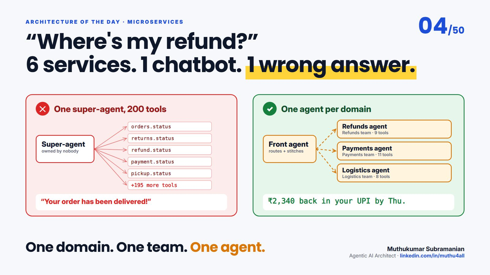

Don't Build One Super-Agent. Build One Per Domain.
By Muthukumar Subramanian · Agentic AI Architect

A customer types four words into a shopping app's chatbot: "Where's my refund?"
Simple question. Except the answer lives in six places. Orders knows the item came back. Returns knows the quality check passed on Tuesday. Payments knows the refund was initiated. The UPI gateway knows it hasn't settled. Logistics knows the pickup was late. Notifications knows nobody told the customer.
The chatbot sees one of them and replies: "Your order has been delivered!"
That's not a model problem. It's an architecture problem, and microservices teams have solved this exact problem before.
The architecture today
Microservices split a big application into small services, one per business capability: orders, payments, inventory, shipping. Each team owns its service, its data and its deployments. Services talk over APIs and events. It's how most large digital businesses in India run today, from food delivery to banking apps.
The rule that made it work: each service owns its domain, and nobody reaches into another team's database.
👉 [IMAGE: A-day04-2-in-article-architecture.png]
Caption: One agent per domain, each calling its own team's services as tools. Grey is what you already have. Amber is new.
Where AI plugs in now: one agent per domain
The tempting move is one giant "super-agent" with every API in the company plugged in as a tool. I've seen teams try it. It works in the demo, with eight tools. In production, with two hundred, the agent picks the wrong tool, mixes up two "status" fields, and nobody knows which team should fix it.
The better move copies what microservices already got right:
→ One agent per business domain. A Refunds agent, an Orders agent, a Logistics agent.
→ Each agent calls only its own team's services as tools, exposed through something like MCP. Ten well-named tools, not two hundred.
→ The team that owns the service owns the agent. Same on-call, same release process, same accountability.
→ A thin front agent routes the question to the right domain agent and stitches the answer together.
Start with one domain where questions are frequent and read-only. "Where's my refund?" is perfect: high volume, no money moves, and the answer is fully in your systems.
Where it's heading with agents
In two or three years, I expect every serious service to ship with an agent beside it, the way every service today ships with an API and a dashboard.
Agents will talk to each other across domains, and across companies. That's what the Agent2Agent (A2A) protocol, now under the Linux Foundation, is for: the Refunds agent asks the Payments agent, the Payments agent asks the bank's agent. MCP connects an agent to its tools; A2A connects agents to each other.
The hard question won't be "can the agents talk?" It'll be "who owns what an agent promised?" Domain ownership answers that the same way it always has: the team that owns the domain.
👉 [IMAGE: A-day04-3-in-article-super-vs-domain.png]
Caption: One super-agent versus one agent per domain. Five differences that show up in production.
Watch it work
One question, three domain agents, one correct answer.
👉 [GIF: A-day04-4-in-article-refund-question.gif]
Caption: "Where's my refund?" routed to the domains that actually know.
Pros
→ Small tool lists per agent, so tool choice is far more reliable
→ Clear ownership: when the Refunds agent is wrong, everyone knows whose sprint it goes into
→ Each domain can move at its own pace, with its own model, evaluations and release cycle
Cons
→ More agents means more to version, monitor and secure (Track B covers this one today)
→ Cross-domain questions add hops, latency and token cost
→ Weak domain boundaries become weak agent boundaries. If your services are a "distributed monolith", your agents will be too
The opportunity
Most large companies already have a service catalogue: hundreds of APIs, documented to varying degrees, each owned by a team. Almost none of it is agent-ready.
That's the market: domain agents built on top of existing service catalogues. Turning a team's APIs into a clean MCP tool set, building and evaluating the domain agent, and wiring agents together with A2A. For integrators, it's a repeatable package per domain: refunds, claims, KYC, order tracking. For product companies, it's the platform underneath: tool registries, routing, and evaluation per domain.
Tools to try
MCP servers to expose each team's services as tools · OpenAI Agents SDK or LangGraph to build the domain agents · Google's Agent Development Kit and the A2A protocol for agent-to-agent calls · Amazon Bedrock AgentCore or Microsoft Agent Framework to run them in production.
Your turn 👇
One super-agent or one agent per domain: which would you bet your support queue on? Pick one.
Tag the architect who drew your service boundaries. They just designed your agents too.
Day 4 of 50 · follow along. Tomorrow: Event-driven, with agents that react to events and emit new ones.